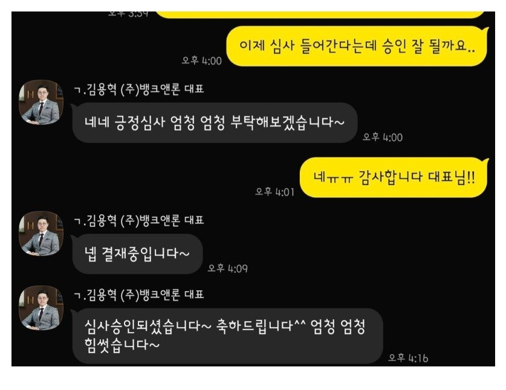

[개인회생자대출 ] 미납 매우과다. 15회차 미납으로 타사 부결후 뱅크앤론에서 승인. 김용혁 대표님과 이현섭 과장님께 진심으로 감사합니다.
재직기간 : 1년 4개월
정규직
사대보험: 유
연봉 : 세후 월240
신용등급: 모름
기대출 내역 : 없음
필요서류: 초본. 건강보험 자격득실확인서. 통장사본. 건강보험 납부확인서. 3개월 월급내역
개인회생 3회 납부 후 사정이 있어서 15회정도 못냈는데 그걸 갚고자 여러곳 돌았지만 다 실패했습니다..
하지만 김용혁 대표님께서 그 어려운걸 도와주셨습니다.
마치 본인의 일인듯 빠르고 친절하게 도와주셔서 감사합니다.
정말 힘들었는데 너무 감사합니다.

https://cafe.naver.com/cityman88/310996